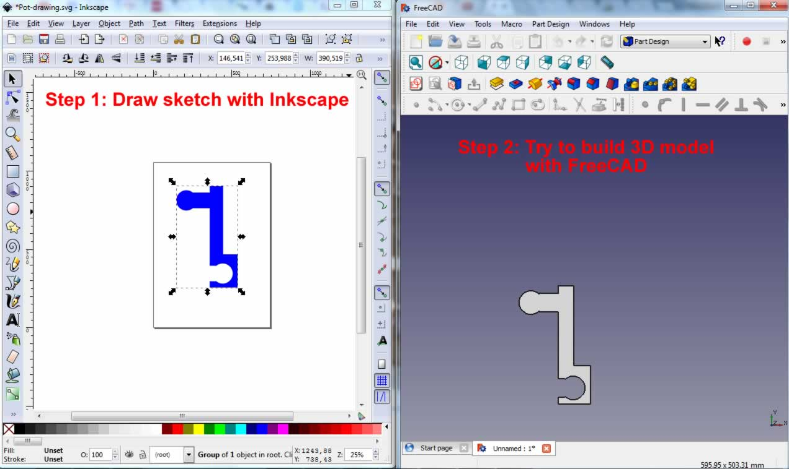
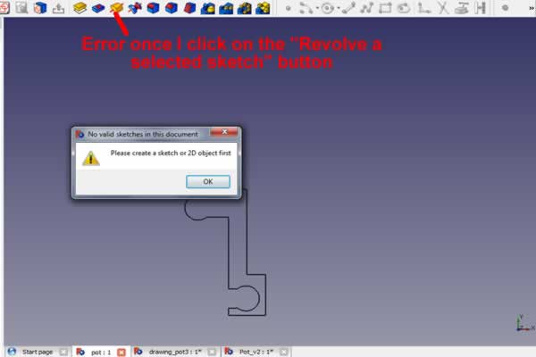
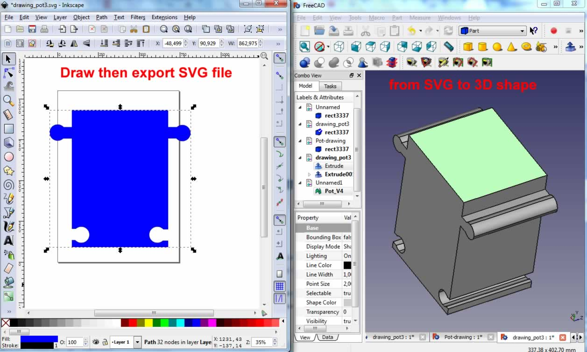
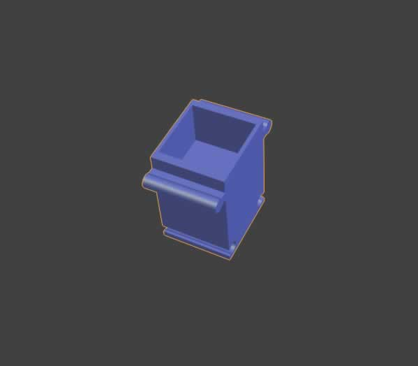

This week's assignment is very hard for me since I need first to understand the tips behind converting and conceptualizing project ideas into drawing and design softwares. Still I’m very excited and ready to accept this challenge as it is one of the reasons why I decided to be part of the Fab Academy.
The content of this module are related to Computer-Aided Design techniques and tools. During the online lecture with Neil, we got a broad view about major software and techniques used by the Fab community in order to design objects (translate ideas into computer sketches, 2D rapresentations and 3D models). In particular, we have covered 2D and Vector design (GIMP, Inkscape, QCAD, FreeCAD) and 3D Design (Antimony, SketchUp, Blender, Rhino, etc).
The day after the streaming session, we had a whole day practical sessions about each of the above mentioned software. Our FabLab instructor gave as great guidance and tips on how to practically use each software, and during this session I used personally for the first time these software and produced my first sketches and models. My learning experience covered:
- Software for vector and 2D design: as I have some knowhow managing pictures with Macromedia Fireworks, it was pretty easy for me to try and learn other software especially GIMP. After that I moved to vector programs, and I made many draft exercises with Inkscape, QCAD and FreeCAD where I learnt how to make sketches, save them in SVG compatible formats.
- 3D design: which is very hard for me, but I sent a lot of time practicing and practicing with FreeCAD and Blender software. Later you can see what I managed to produce, even if the results may look very basic for an expert, I can share with you that I learnt many conceptual things and step by step I am learning the software.
Taking in consideration the idea of my project proposal, I tried to design and model a draft of the modular plant pot that further shall be equipped with plant health monitoring system. The following is the work I realized:
Trial 1: I tried to sketch the edge of the pot using Inkscape, then export it as SVG file. The next step was to import the SVG by FreeCAD, go to the part design view and use the function “Revolve a selected sketch” in order to get the 3D model of the pot.

I faced some problems with recognizing the SVG file as a FreeCAD valid sketch or 2D model, and therefore I couldn’t use the function “Revolve a selected sketch”. I made many trials, but I received the following error message:

Trial 2: As I feel confortable drawing with Inkscape, I tried to design the shape of the pot and save it as SVG file. Using FreeCAD I import the SVG as geometry. I extrude the imported sketch in order to have the 3D model.
In order to create the empty space (the potting soil space), I draw another object that I extruded, then using a Boolean function helped me create the difference between the two solid 3D objects. I exported the 3D shape into STL file for further work and modifying with Blender

I used Blender in order to render the 3D model, here is the result:

All the files are available for downloand here: